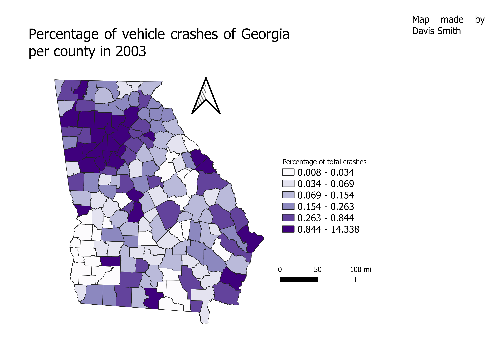

Homework 9: Chloropleth Map
Davis Smith
This map shows the normalization of car crashers per county in Georgia in 2003. I chose this state because I already had the shapefile for it from a previous project. I chose this csv data set because it was the first one I found that used non-census data and could be joined with my shapefile. There wasn't a particular intrest in the topic of car crashes itself (although I have family that lives in Atlanta so I am well aware of how bad the traffic is there). Rather, it was a matter of ease in completing the project and practicing the skills of the project.

Data used for this project
CSV dataset
Link to shapefile
Link to the csv website